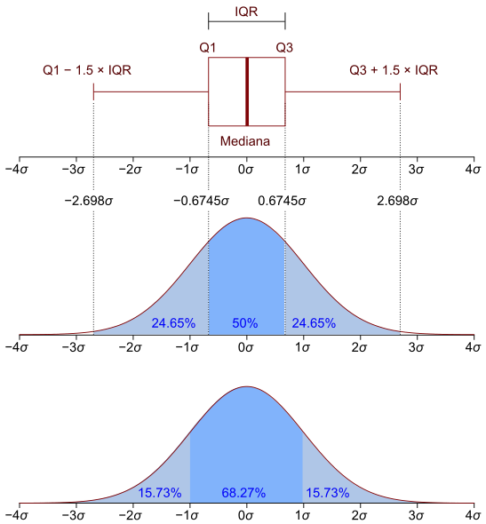

24 Аналіз та обробка статистичних викидів у даних
author: Юрій Клебан
Виявлення аномалій — це сукупність методів, призначених для виявлення незвичайних точок даних.
Аномалія - точка даних або набір точок даних, які не мають таку саму структуру та поведінку, що й інші дані.
Аномалії у даних можуть мати різну природу та по різному себе проявляти:
- Точкова аномалія
- Єдина точка даних
- Незвично в порівнянні з іншими даними
Приклад: одна добова висока температура 41°С серед ряду звичайних весняних днів
- Колективна аномалія
- Аномальна колекція екземплярів даних
- Незвично, якщо розглядати разом
Опишемо набір даних, до використовуватиметься надалі для прикладів.
river_eco - це data.frame, що містить такі три стовпці: - [x] index - цілі числа, що описують порядок спостережень нітратів; - [x] nitrate - місячні концентрації розчинених нітратів у річці; - [x] month - змінна, що містить місяць для кожного спостереження нітратів
Нам потрібно дослідити стовпець nitrate, щоб оцінити наявність точкових аномалій у даних.
| index | nitrate | months | |
|---|---|---|---|
| <int> | <dbl> | <chr> | |
| 1 | 1 | 1.581 | January |
| 2 | 2 | 1.323 | February |
| 3 | 3 | 1.140 | March |
| 4 | 4 | 1.245 | April |
| 5 | 5 | 1.072 | May |
| 6 | 6 | 1.483 | June |
m_levels <- river_data$months[1:12]
river_data <- river_data |>
mutate(months = factor(months, levels = m_levels))
head(river_data)| index | nitrate | months | |
|---|---|---|---|
| <int> | <dbl> | <fct> | |
| 1 | 1 | 1.581 | January |
| 2 | 2 | 1.323 | February |
| 3 | 3 | 1.140 | March |
| 4 | 4 | 1.245 | April |
| 5 | 5 | 1.072 | May |
| 6 | 6 | 1.483 | June |
Переглянемо описову статистику показника нітрати:
Min. 1st Qu. Median Mean 3rd Qu. Max.
0.5920 0.9485 1.0680 1.0649 1.1700 1.8970 Як видно, медіана та середнє відрізняються не дуже.
Далі перевіримо наявність викидів у даних за допомогою boxplot:
boxplot(river_data$nitrate)
# Додамо лінії 1 та 3 квантилів
abline(h=quantile(river_data$nitrate,0.25),col="red",lty=2)
abline(h=quantile(river_data$nitrate,0.75),col="red",lty=2)Your code contains a unicode char which cannot be displayed in your
current locale and R will silently convert it to an escaped form when the
R kernel executes this code. This can lead to subtle errors if you use
such chars to do comparisons. For more information, please see
https://github.com/IRkernel/repr/wiki/Problems-with-unicode-on-windows
Також виведемо номери рядків спостереженнь, що є викидами:

# Середньомісячний вміст нітратів у річці
river_grouped <- river_data |> group_by(months) |> summarise(mean = mean(nitrate))
river_grouped Your code contains a unicode char which cannot be displayed in your
current locale and R will silently convert it to an escaped form when the
R kernel executes this code. This can lead to subtle errors if you use
such chars to do comparisons. For more information, please see
https://github.com/IRkernel/repr/wiki/Problems-with-unicode-on-windows| months | mean |
|---|---|
| <fct> | <dbl> |
| January | 1.2163600 |
| February | 1.1838400 |
| March | 1.1050400 |
| April | 1.0166250 |
| May | 0.9978333 |
| June | 0.9792083 |
| July | 0.9810417 |
| August | 0.9380833 |
| September | 0.9885833 |
| October | 1.0360000 |
| November | 1.0962500 |
| December | 1.2264167 |

Між Q1 та Q3 зосереджено 50% усіх спостережень. Персентиль відображає кількість спостережень, що зосереджені з ним включно. Нижче розміщено більше інформації для ознайомлення з інформацією про квантилі.

Джерело: https://en.wikipedia.org/wiki/Interquartile_range

Джерело: https://makemeanalyst.com/explore-your-data-range-interquartile-range-and-box-plot/
Визначивши викиди у даних з ними можна здійснити кілька операцій:
- Заміна на деякі значення (impute)
- Заміна на границі квантилей
lower_bound <- quantile(river_data$nitrate, 0.025)
lower_bound
upper_bound <- quantile(river_data$nitrate, 0.975)
upper_bound
2.5%: 0.75475
97.5%: 1.4095
outlier_index <- which(river_data$nitrate < lower_bound | river_data$nitrate > upper_bound)
outlier_index- 1
- 6
- 36
- 53
- 104
- 119
- 121
- 156
- 159
- 167
- 199
- 200
- 269
- 270
- 281
- 282
| index | nitrate | months | |
|---|---|---|---|
| <int> | <dbl> | <fct> | |
| 1 | 1 | 1.581 | January |
| 6 | 6 | 1.483 | June |
| 36 | 36 | 1.643 | December |
| 53 | 53 | 1.533 | May |
| 104 | 104 | 0.671 | August |
| 119 | 119 | 1.517 | November |
| 121 | 121 | 1.414 | January |
| 156 | 156 | 1.897 | December |
| 159 | 159 | 1.414 | March |
| 167 | 167 | 0.671 | November |
| 199 | 199 | 0.748 | July |
| 200 | 200 | 0.592 | August |
| 269 | 269 | 0.700 | May |
| 270 | 270 | 0.673 | June |
| 281 | 281 | 0.730 | May |
| 282 | 282 | 0.693 | June |
Таким чином, усі значення вище та нище деякого показника можемо замінити на потрібні нам значення, наприклад, середні за поточний місяць.
Здійснимо заміну значень у наборі даних на основі квантилей:
river_data$nitrate_upd <- river_data$nitrate
qnt <- quantile(river_data$nitrate_upd, probs=c(.05, .95), na.rm = T)
H <- 1.5 * IQR(qnt[1], na.rm = T)
river_data$nitrate_upd[river_data$nitrate_upd < (qnt[1] - H)] <- qnt[1]
river_data$nitrate_upd[river_data$nitrate_upd > (qnt[2] + H)] <- qnt[2]
qnt- 5%
- 0.805
- 95%
- 1.3325


24.1 Додаткові прийоми очистки даних
24.1.1 Видалення дублікатів
| X | Y |
|---|---|
| <dbl> | <chr> |
| 1 | A |
| 1 | B |
| 2 | C |
| 1 | A |
| 3 | B |
| 2 | C |
| 1 | A |
24.2 Набори даних
- https://github.com/kleban/r-book-published/tree/main/datasets/untitled.csv
- https://github.com/kleban/r-book-published/tree/main/datasets/badtitled.csv
- https://github.com/kleban/r-book-published/tree/main/datasets/cleaned_titled.csv
- https://github.com/kleban/r-book-published/tree/main/datasets/cleaned_titled2.csv
- https://github.com/kleban/r-book-published/tree/main/datasets/river_eco.csv